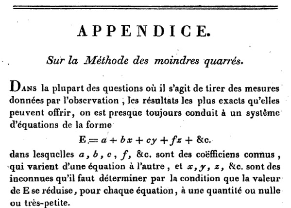
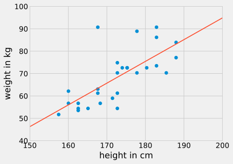
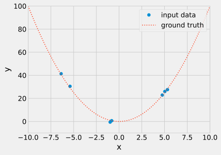
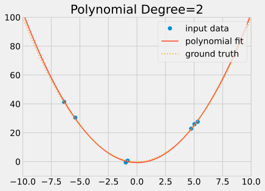
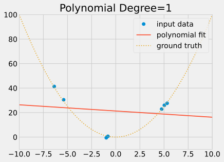
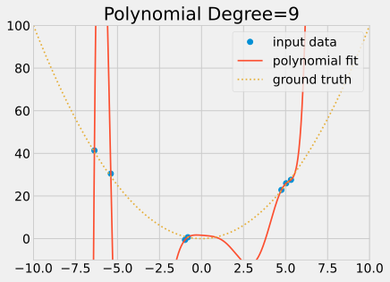
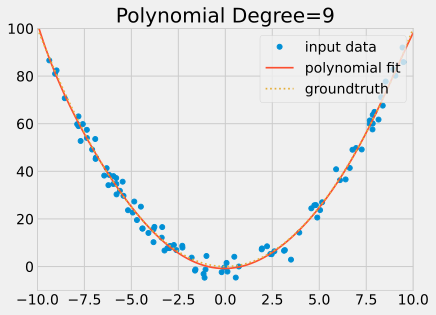
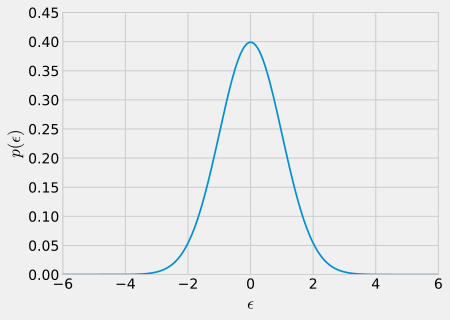
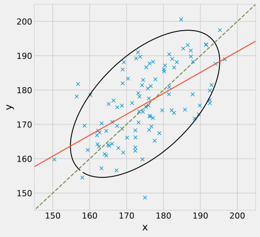

1 Linear Regression and Least Squares
This chapter marks the beginning of our journey into Machine Learning (ML), and we start with a familiar topic: Linear Regression, which is most commonly solved using the method of Least Squares (LS). While many of you will have encountered Least Squares before, our goal here is not so much to provide a primer. Instead, we will revisit this classical technique through the modern lens of Machine Learning.
It is often forgotten, but Least Squares can be considered the original Machine Learning algorithm. By examining it, we can introduce many of the fundamental concepts that form the bedrock of modern ML. These include the distinction between training and testing data, the challenges of overfitting and underfitting, the role of regularisation, the modelling of noise and the concept of a loss function. Understanding these ideas is key, as they are central to virtually all Machine Learning techniques we will explore.
The method of least squares has its origins in astronomy, where it was developed to calculate the orbits of celestial bodies. It is often credited to Carl Friedrich Gauss, who published it in 1809, but it was first described by Adrien-Marie Legendre in 1805. The priority dispute arose from Gauss’s claim to have been using the method since 1795.

1.1 The Linear Model and Notations
Let us begin with a simple, practical example. Imagine we have collected data on the height and weight of a group of people, as shown in Figure fig-polyfit-regression. Our goal is to build a model that can predict a person’s weight based on their height.

In the language of Machine Learning, we define the following:
The input to our predictive model is a set of features, represented by a vector (x_1, \dots, x_p). In this simple case, we have only one feature, x_1, which is a person’s height in centimetres.
The output of the model is a scalar value, y. Here, y is the person’s weight in kilograms. It is straightforward to generalise this to a vector of outputs by treating each component as a separate scalar prediction problem.
The model defines the relationship between the input features and the output. For linear regression, we assume this relationship is linear:
y = w_0 + w_1 x_{1} + w_2 x_{2} + w_3 x_{3} + \dots + w_p x_{p}
For our height-weight example, a well-fitting model might look like this:
\mathrm{weight (kg)} = \mathrm{height (cm)} \times 0.972 - 99.5
The parameters of the model, (w_0, w_1, \dots, w_p), are called the weights. The term w_0 is often called the bias or intercept. The mathematical notations used here are strongly established conventions in Machine Learning, and we will adhere to them throughout this module. Note, however, that ML is an interdisciplinary field, and conventions can sometimes conflict. For instance, in Statistics, the model parameters are instead denoted as \beta_0, \beta_1, \dots, \beta_p.
Let us formalise the problem. We have a dataset consisting of n observations. For each observation i, we have a vector of p features (x_{i1}, x_{i2}, \dots, x_{ip}) and a corresponding output y_i. The linear model for each observation is:
\begin{aligned} y_1 &= w_0 + w_1 x_{11} + w_2 x_{12} + \dots + w_p x_{1p} + \varepsilon_1 \\ y_2 &= w_0 + w_1 x_{21} + w_2 x_{22} + \dots + w_p x_{2p} + \varepsilon_2 \\ y_3 &= w_0 + w_1 x_{31} + w_2 x_{32} + \dots + w_p x_{3p} + \varepsilon_3 \\ &\;\;\vdots \\ y_n &= w_0 + w_1 x_{n1} + w_2 x_{n2} + \dots + w_p x_{np} + \varepsilon_n \end{aligned}
Again, we will stick to these notations throughout the module and n will always represent the number of observations/number of points in your dataset, and p the number of features.
Since a simple linear model cannot perfectly capture the complexity of the real world, we have introduced an error term, \varepsilon_i, for each observation. This term represents the difference between our model’s prediction and the actual observed value y_i.
Our objective is to find the set of weights (w_0, w_1, \dots, w_p) that makes the errors as small as possible. However, the errors (\varepsilon_1, \dots, \varepsilon_n) form a vector, and we cannot directly minimise a vector. We need to aggregate these n error values into a single scalar quantity that we can compare and use for optimisation.
In Least Squares, this is achieved using the Mean Squared Error (MSE), which is the average of the squared errors:
E = \frac{1}{n} \sum_{i=1}^{n} \varepsilon_i^2 = \frac{1}{n} \sum_{i=1}^{n} \left( w_0 + w_1 x_{i1} + \dots + w_p x_{ip} - y_i \right)^2
The choice of the Mean Squared Error is the defining aspect of Least Squares. While other metrics are possible (such as the mean absolute difference), the MSE is mathematically convenient and, as we will see, has a deep probabilistic justification. In Machine Learning, the function that measures the model’s error is called the loss function. Our goal is to find the weights that minimise this loss function.
1.2 Optimisation
To find the optimal values for the weights (w_0, \dots, w_p) that minimise the MSE, we can use calculus. The MSE, E(w_0, \dots, w_p), is a convex function of the weights. Therefore, its minimum occurs where its gradient is zero; that is, where all its partial derivatives with respect to each weight are equal to zero:
\frac{\partial E}{\partial w_0} = \dots = \frac{\partial E}{\partial w_p} = 0
Let us compute these partial derivatives for our MSE loss function: E(w_0, \dots, w_p) = \frac{1}{n} \sum_{i=1}^{n} \left( w_0 + w_1 x_{i1} + \dots + w_p x_{ip} - y_i \right)^2
\begin{aligned} \frac{\partial E}{\partial w_0}(w_0, \dots, w_p) &= \frac{2}{n} \sum_{i=1}^{n} \left( w_0 + w_1 x_{i1} + \dots + w_p x_{ip} - y_i \right) = 0 \\ \frac{\partial E}{\partial w_1}(w_0, \dots, w_p) &= \frac{2}{n} \sum_{i=1}^{n} x_{i1} \left( w_0 + w_1 x_{i1} + \dots + w_p x_{ip} - y_i \right) = 0 \\ &\;\;\vdots \\ \frac{\partial E}{\partial w_p}(w_0, \dots, w_p) &= \frac{2}{n} \sum_{i=1}^{n} x_{ip} \left( w_0 + w_1 x_{i1} + \dots + w_p x_{ip} - y_i \right) = 0 \end{aligned}
Rearranging these terms and dividing by 2/n, we obtain a system of p+1 linear equations in p+1 unknowns (w_0, \dots, w_p):
\begin{alignat*}{5} & w_0 \sum_{i=1}^n 1 && + w_1 \sum_{i=1}^n x_{i1} && +\dots && + w_p \sum_{i=1}^n x_{ip} && = \sum_{i=1}^n y_i \\ & w_0 \sum_{i=1}^n x_{i1} && + w_1 \sum_{i=1}^n x_{i1}^2 && +\dots && + w_p \sum_{i=1}^n x_{i1}x_{ip} && = \sum_{i=1}^n x_{i1} y_i \\ & && \;\;\vdots && \;\;\vdots && \;\;\vdots && \;\;\vdots \\ & w_0 \sum_{i=1}^n x_{ip} && + w_1 \sum_{i=1}^n x_{ip}x_{i1} && +\dots && + w_p \sum_{i=1}^n x_{ip}^2 && = \sum_{i=1}^n x_{ip} y_i \end{alignat*}
This gives a linear system of p+1 equations, solvable efficiently using standard linear solvers.
1.2.1 Matrix Notation
While the summation notation is explicit, it quickly becomes cumbersome. Deriving these equations using matrix notation is much cleaner and avoids having to track nested summations. By convention, we denote scalars with a lowercase letter (x or y), vectors with a bold lowercase letter (\mathbf{w} or \mathbf{x}), and matrices with a bold uppercase letter (\mathbf{X}).
Let us define the following: \mathbf{y} = \begin{pmatrix} y_{1}\\ y_{2}\\ \vdots \\ y_{n} \end{pmatrix}, \quad \mathbf{X} = \begin{pmatrix} 1 & x_{11} & \dots & x_{1p} \\ 1 & x_{21} & \dots & x_{2p} \\ \vdots & \vdots & \ddots & \vdots \\ 1 & x_{n1} & \dots & x_{np} \end{pmatrix}, \quad \mathbf{w} = \begin{pmatrix} w_{0} \\ w_{1} \\ \vdots \\ w_{p} \end{pmatrix}, \quad \boldsymbol{\varepsilon} = \begin{pmatrix} \varepsilon_{1}\\ \varepsilon_{2}\\ \vdots \\ \varepsilon_{n} \end{pmatrix}
The linear model compactly becomes: \mathbf{y} = \mathbf{X} \mathbf{w} + \boldsymbol{\varepsilon}
The matrix \mathbf{X}, which stacks all the observations, is called the Design Matrix.
Notice that w_0 plays a distinct role as an intercept: in machine learning and deep learning, this weight w_0 is called the bias. We can consider the bias w_0 as the weight of an augmented feature with constant value 1 (x_{i0}=1). Thus, the row feature vector for observation i is:
\mathbf{x}_i = \begin{pmatrix} 1 \\ x_{i1}\\ \vdots \\ x_{ip} \end{pmatrix}
The linear model for observation i is written compactly as y_i = \mathbf{x}_i^{\top} \mathbf{w} + \varepsilon_i, and the design matrix simply stacks these row feature vectors:
\mathbf{X} = \begin{pmatrix} \mathbf{x}_1^{\top} \\ \vdots \\ \mathbf{x}_n^{\top} \end{pmatrix}
The Mean Squared Error loss function can also be expressed neatly in matrix form. The sum of squared errors, \sum_{i=1}^n \varepsilon_i^2, is equivalent to the squared Euclidean norm of the error vector, \|\boldsymbol{\varepsilon}\|^2, which can be written as the dot product \boldsymbol{\varepsilon}^{\top}\boldsymbol{\varepsilon}:
\begin{aligned} E(\mathbf{w}) &= \frac{1}{n} \sum_{i=1}^n \varepsilon_i^2 = \frac{1}{n} \boldsymbol{\varepsilon}^{\top} \boldsymbol{\varepsilon} = \frac{1}{n} \| \boldsymbol{\varepsilon} \|^2 \\ &= \frac{1}{n} \left( \mathbf{X} \mathbf{w} - \mathbf{y} \right)^{\top} \left( \mathbf{X} \mathbf{w} - \mathbf{y} \right) \\ &= \frac{1}{n} \left( \mathbf{w}^{\top} \mathbf{X}^{\top}\mathbf{X} \mathbf{w} + \mathbf{y}^{\top}\mathbf{y} - 2 \mathbf{w}^{\top}\mathbf{X}^{\top}\mathbf{y} \right) \end{aligned}
At the minimum of E(\mathbf{w}), the gradient vector vanishes: \frac{\partial E}{\partial \mathbf{w}} = \left( \frac{\partial E}{\partial w_0}, \dots, \frac{\partial E}{\partial w_p} \right)^{\top} = \mathbf{0}
Below is a reference list of useful matrix and vector gradient identities. Vectors \mathbf{a}, \mathbf{b} and matrix \mathbf{A} are independent of \mathbf{w}.
\begin{alignat*}{3} & \frac{\partial \mathbf{a}^{\top}\mathbf{w}}{\partial \mathbf{w}} &&= \mathbf{a} && \\ & \frac{\partial \mathbf{b}^{\top}\mathbf{A}\mathbf{w}}{\partial \mathbf{w}} &&= \mathbf{A}^{\top}\mathbf{b} && \\ & \frac{\partial \mathbf{w}^{\top}\mathbf{A}\mathbf{w}}{\partial \mathbf{w}} &&= (\mathbf{A} + \mathbf{A}^{\top})\mathbf{w} && \quad \text{($2\mathbf{A}\mathbf{w}$ if $\mathbf{A}$ is symmetric)} \\ & \frac{\partial \mathbf{w}^{\top}\mathbf{w}}{\partial \mathbf{w}} &&= 2\mathbf{w} && \\ & \frac{\partial (\mathbf{a}^{\top}\mathbf{w})(\mathbf{w}^{\top}\mathbf{b})}{\partial \mathbf{w}} &&= (\mathbf{a}\mathbf{b}^{\top} + \mathbf{b}\mathbf{a}^{\top})\mathbf{w} && \end{alignat*}
Let us now apply these identities to our MSE loss function: \frac{\partial E}{\partial \mathbf{w}} = \frac{1}{n} \frac{\partial}{\partial \mathbf{w}} \left( \mathbf{w}^{\top} \mathbf{X}^{\top}\mathbf{X} \mathbf{w} + \mathbf{y}^{\top}\mathbf{y} - 2\mathbf{w}^{\top}\mathbf{X}^{\top}\mathbf{y} \right)
Differentiating term-by-term: \begin{aligned} \frac{\partial}{\partial \mathbf{w}} \left( \mathbf{w}^{\top} \mathbf{X}^{\top}\mathbf{X} \mathbf{w} \right) &= 2 \mathbf{X}^{\top}\mathbf{X} \mathbf{w} \\ \frac{\partial}{\partial \mathbf{w}} \left( \mathbf{y}^{\top}\mathbf{y} \right) &= \mathbf{0} \\ \frac{\partial}{\partial \mathbf{w}} \left( \mathbf{w}^{\top}\mathbf{X}^{\top}\mathbf{y} \right) &= \mathbf{X}^{\top}\mathbf{y} \end{aligned}
Setting the gradient to zero: \frac{\partial E}{\partial \mathbf{w}} = \frac{2}{n}\mathbf{X}^{\top}\mathbf{X}\mathbf{w} - \frac{2}{n}\mathbf{X}^{\top}\mathbf{y} = \mathbf{0} \implies \mathbf{X}^{\top}\mathbf{X}\mathbf{w} = \mathbf{X}^{\top}\mathbf{y}
This linear system is known as the normal equations: \mathbf{X}^{\top}\mathbf{X}\mathbf{w} = \mathbf{X}^{\top}\mathbf{y}
Notice that this is identical to the system derived entry-by-entry using scalar calculus. Provided \mathbf{X} has full column rank (\mathbf{X}^{\top}\mathbf{X} is invertible), the least squares estimate is: \hat{\mathbf{w}} = (\mathbf{X}^{\top} \mathbf{X})^{-1} \mathbf{X}^{\top} \mathbf{y}
1.3 Least Squares in Practice
Now that we have derived the theory, let us see how it can be used in practice.
1.3.1 A Simple Affine Example
Let us return to our initial height-weight example. The model is a simple affine function: y = w_0 + w_1 x. The design matrix \mathbf{X} stacks the single feature x_i for each person, along with a column of ones for the bias term:
\mathbf{X} = \begin{pmatrix} 1 & x_{1} \\ 1 & x_{2} \\ \vdots & \vdots \\ 1 & x_{n} \end{pmatrix}
The components of the normal equations evaluate to: \mathbf{X}^{\top} \mathbf{X} = \begin{pmatrix} \sum_{i=1}^{n} 1 & \sum_{i=1}^{n} x_i \\ \sum_{i=1}^{n} x_i & \sum_{i=1}^{n} x_i^2 \end{pmatrix}, \quad \mathbf{X}^{\top} \mathbf{y} = \begin{pmatrix} \sum_{i=1}^{n} y_i \\ \sum_{i=1}^{n} x_i y_i \end{pmatrix}
Provided \mathbf{X} has full column rank (\mathbf{X}^\top\mathbf{X} is invertible), the least squares estimate is: \hat{\mathbf{w}} = \left(\mathbf{X}^{\top} \mathbf{X}\right)^{-1} \mathbf{X}^{\top} \mathbf{y} = \begin{pmatrix} \sum_{i=1}^{n} 1 & \sum_{i=1}^{n} x_i \\ \sum_{i=1}^{n} x_i & \sum_{i=1}^{n} x_i^2 \end{pmatrix}^{-1} \begin{pmatrix} \sum_{i=1}^{n} y_i \\ \sum_{i=1}^{n} x_i y_i \end{pmatrix}
Numerically, we obtain \hat{\mathbf{w}} = \begin{pmatrix} -99.5 \\ 0.972 \end{pmatrix}, yielding: \mathrm{weight} = \mathrm{height} \times 0.972 - 99.5
1.3.2 Transforming Input Features
A key aspect is that although the model must be linear in the parameters \mathbf{w}, it does not have to be linear in the original input features \mathbf{x}. A model is linear in the parameters if it can be written as: y = f(\mathbf{x}, \mathbf{w}) = \sum_{j=0}^p w_j \phi_j(\mathbf{x}) where the basis functions \phi_j(\mathbf{x}) can be non-linear, but remain strictly independent of the weights \mathbf{w}.
This means we can fit non-linear relationships by first transforming our raw inputs. For example, we can fit a cubic polynomial model: y = w_0 + w_1 x + w_2 x^2 + w_3 x^3 This is still a linear model because y is linear in the unknown parameters \mathbf{w}. We have simply mapped input x to feature vector \mathbf{x} = (1, x, x^2, x^3)^\top.
Similarly: y = w_0 + w_1 \cos(2\pi x) + w_2 \sin(2\pi x) is linear in parameters with \mathbf{x} = (1, \cos(2\pi x), \sin(2\pi x))^\top. In contrast, a model like y = w_0^2 + x is not linear in the parameters, because the term w_0^2 is non-linear in parameter w_0.
Similarly, we can transform the output variable. For instance, if we have collected 2D points (x_{1i}, x_{2i}) that lie on a circle centred at the origin, we could define a new output y_i = \sqrt{x_{1i}^2 + x_{2i}^2} and fit a simple model y = w_0 to find the radius.
This idea of transforming input features is at the core of many Machine Learning techniques. However, as we will see later in sec-loss-noise, this practice is not entirely without consequences.
1.3.3 Polynomial Fitting
Let us examine the use of feature transforms in more detail by looking at polynomial fitting, a particularly instructive example for ML. Consider the small dataset (x_i, y_i) plotted below. The ground-truth process generating the data is a quadratic model: y = w_0 + w_1 x + w_2 x^2.

For model y = w_0 + w_1 x + w_2 x^2, the polynomial design matrix is: \mathbf{X} = \begin{pmatrix} 1 & x_{1} & x_{1}^2 \\ 1 & x_{2} & x_{2}^2 \\ \vdots & \vdots & \vdots \\ 1 & x_{n} & x_{n}^2 \end{pmatrix}
The components of the normal equations evaluate to: \mathbf{X}^{\top} \mathbf{X} = \begin{pmatrix} \sum 1 & \sum x_i & \sum x_i^2 \\ \sum x_i & \sum x_i^2 & \sum x_i^3 \\ \sum x_i^2 & \sum x_i^3 & \sum x_i^4 \end{pmatrix}, \quad \mathbf{X}^{\top} \mathbf{y} = \begin{pmatrix} \sum y_i \\ \sum x_i y_i \\ \sum x_i^2 y_i \end{pmatrix}
The least squares parameter estimate remains: \hat{\mathbf{w}} = \left(\mathbf{X}^{\top} \mathbf{X}\right)^{-1} \mathbf{X}^{\top} \mathbf{y}
Solving with the collected data gives the estimated quadratic curve shown in Figure fig-polyfit2 (MSE: 4.38e-01), which matches the ground truth well.

1.4 Underfitting
What happens if we choose a model that is too simple for the data? For example, let us try to fit a linear model (order 1), y = w_0 + w_1 x, to our quadratic data.

The resulting fit is poor, with a large MSE error (\mathrm{MSE} = 2.02 \times 10^2). The straight line is unable to capture the curvature present in the data. This pathology is called underfitting. It occurs when the model is too restrictive to capture the structure in the data: the training error cannot be reduced to a satisfactory level.
You are underfitting when the model is too restrictive to capture the structure in the data: the training error cannot be reduced to a satisfactory level.
To remedy underfitting, use a more flexible model, for instance, by increasing the degree of the polynomial or introducing relevant features.
1.5 Overfitting
Now, let us consider the opposite problem. What if we use a model that is too complex? Let us try a 9th-degree polynomial: y = w_0 + w_1 x + \dots + w_9 x^9 to our small dataset.

Although training error is near zero (\mathrm{MSE} = 7.59 \times 10^{-6}), the curve oscillates wildly between sample points. This pathology is called overfitting.
Given enough free parameters, a model will fit training observations arbitrarily closely, including noise, but fail to generalise to unseen test data.
This is why we must always evaluate our model on a separate test set—a portion of data that was held out and not used during training.
You know that you are overfitting when the training error is low, but the prediction error on new, unseen data is large.
There are two primary ways to combat overfitting:
Use a simpler model: Check whether your model class is unnecessarily complex: use a simpler model and ensure it does not underfit (e.g., do not use degree 9 when the underlying phenomenon is degree 2).
Get more training data: Often the model class is reasonable, but there are too few observations to constrain all coefficients (e.g., 5 observations cannot reliably constrain a 9th-degree polynomial).
Using more data is always a good idea. It allows us to use models that are more complex than necessary. With sufficient samples, irrelevant coefficients naturally shrink towards zero:

Note that a small gap between training and test performance is normal, and aggressively avoiding it might lead to underfitting.
1.6 Regularisation
What if we cannot get enough data? In situations where data is genuinely scarce or expensive, an alternative solution is to use regularisation.
In Least Squares, standard \ell_2 shrinkage is known as Tikhonov regularisation (or Ridge regression). Instead of minimising \|\mathbf{X} \mathbf{w} - \mathbf{y}\|^2, we add a parameter penalty: E(\mathbf{w}) = \|\mathbf{X} \mathbf{w} - \mathbf{y}\|^2 + \alpha \|\mathbf{w}\|^2 where \|\mathbf{w}\|^2 = w_0^2 + w_1^2 + \dots + w_p^2 is the squared \ell_2-norm of the weight vector, and \alpha > 0 is a hyperparameter that controls the strength of the regularisation.
This penalises large coefficients, guarantees invertibility of the linear system, and admits a closed-form solution: \hat{\mathbf{w}} = (\mathbf{X}^{\top}\mathbf{X} + \alpha \mathbf{I})^{-1} \mathbf{X}^{\top}\mathbf{y} where \mathbf{I} is the identity matrix.
Note: In practice, the intercept w_0 is left unregularised by setting the top-left diagonal entry of the identity matrix \mathbf{I} to 0.
Tikhonov regularisation pulls weights towards zero when evidence in the data is insufficient to justify large values. It encodes a prior assumption: without evidence to the contrary, simpler, smaller weights are more plausible. For example, it is much more plausible that: \mathrm{weight} = \mathrm{height} \times 0.972 - 99.5 than: \mathrm{weight} = \mathrm{height} \times 10^{10} - 10^{20} even if both produce a similar prediction error on a small training set. Regularisation helps us favour the former.
Regularisation avoids severe instability when evaluating predictions outside dense regions of training inputs. However, this stability introduces estimation bias. Whenever possible, prefer collecting sufficient samples so that \mathbf{X}^{\top}\mathbf{X} is comfortably conditioned on its own.
So, go and get more data!
1.7 The Maximum Likelihood Perspective
Very early on, Gauss established a deep connection between Least Squares, the principles of probability, and the Gaussian (or Normal) distribution. This provides a probabilistic justification for using the Mean Squared Error as our loss function.
Recall our linear model: \mathbf{y} = \mathbf{X} \mathbf{w} + \boldsymbol{\varepsilon}
We can adopt a probabilistic view by making an explicit assumption about the nature of the error term \boldsymbol{\varepsilon}. Let us assume that the errors are drawn independently from a Gaussian distribution with a mean of zero and some variance \sigma^2. \varepsilon_i \sim \mathcal{N}(0, \sigma^2) The probability density function (pdf) for a single error term is: p(\varepsilon) = \frac{1}{\sqrt{2\pi\sigma^2}} \exp\left(-\frac{\varepsilon^2}{2\sigma^2}\right)

Given \mathbf{x}_i and parameters \mathbf{w}, observation y_i has conditional density: p(y_i \mid \mathbf{x}_i, \mathbf{w}) = p(\varepsilon_i = y_i - \mathbf{x}_i^{\top}\mathbf{w}) = \frac{1}{\sqrt{2\pi\sigma^2}}\exp\left(-\frac{(y_i - \mathbf{x}_i^{\top}\mathbf{w})^2}{2\sigma^2}\right)
Assuming that all n observations are independent and identically distributed (i.i.d.), the likelihood of observing the entire dataset (\mathbf{X}, \mathbf{y}) is the product of the individual likelihoods: \begin{aligned} p(\mathbf{y} \mid \mathbf{X}, \mathbf{w}) &= \prod_{i=1}^n p(y_i \mid \mathbf{x}_i, \mathbf{w}) \\ &= \left(\frac{1}{\sqrt{2\pi\sigma^2}}\right)^n \exp\left(-\frac{1}{2\sigma^2} \sum_{i=1}^n (y_i - \mathbf{x}_i^{\top}\mathbf{w})^2\right) \end{aligned}
The principle of Maximum Likelihood Estimation (MLE) states that we should choose the parameters \mathbf{w} that make our observed data most probable. That is, we want to find the \mathbf{w} that maximises the likelihood function p(\mathbf{y} \mid \mathbf{X}, \mathbf{w}): \hat{\mathbf{w}}_{\mathrm{ML}} = \arg\max_{\mathbf{w}} p(\mathbf{y} \mid \mathbf{X}, \mathbf{w})
For practical reasons, it is easier to work with the logarithm of the likelihood, as this turns the product into a sum and does not change the location of the maximum. Maximising the log-likelihood is equivalent to minimising the negative log-likelihood: \begin{aligned} \hat{\mathbf{w}}_{\mathrm{ML}} &= \arg\min_{\mathbf{w}} \left[ - \log p(\mathbf{y} \mid \mathbf{X}, \mathbf{w}) \right] \\ &= \arg\min_{\mathbf{w}} \left[ \frac{1}{2\sigma^2} \sum_{i=1}^n (y_i - \mathbf{x}_i^{\top}\mathbf{w})^2 + n \log\left(\sqrt{2\pi\sigma^2}\right) \right] \\ &= \arg\min_{\mathbf{w}} \sum_{i=1}^n (y_i - \mathbf{x}_i^{\top}\mathbf{w})^2 \end{aligned}
Since the terms n, \log(\sqrt{2\pi\sigma^2}), and 2\sigma^2 are positive constants with respect to \mathbf{w}, minimising this expression is equivalent to minimising the sum of squared residuals: \hat{\mathbf{w}}_{\mathrm{ML}} = \arg\min_{\mathbf{w}} \sum_{i=1}^n (y_i - \mathbf{x}_i^{\top}\mathbf{w})^2
Minimising the sum of squared residuals is mathematically identical to maximum likelihood estimation under additive i.i.d. Gaussian noise. This fundamental result shows that the Least Squares estimate is identical to the Maximum Likelihood solution under the assumption of normal errors.
Choosing the MSE loss is equivalent to assuming that the prediction error is normally distributed. If we were to choose a different loss function, it would correspond to a different assumption about the noise. For instance, choosing the Mean Absolute Error (MAE) loss, \sum |y_i - \mathbf{x}_i^{\top}\mathbf{w}|, is equivalent to assuming the error follows a Laplace distribution.
In conclusion, the choice of loss function should ideally be driven by our knowledge of the data-generating process. In practice, however, the choice is often guided by a combination of empirical performance on a test set and the mathematical convenience of optimisation.
1.8 Loss, Feature Transforms, and Noise
Here are a few examples to illustrate the intricate relationships between the loss function, feature transformations, and noise characteristics.
1.8.1 Example 1: Regression Towards the Mean
The word Regression originates from Francis Galton’s paper, Regression towards mediocrity in hereditary stature (1886). Galton compared the distribution of heights between parents and their offspring. Using least squares, he observed that parents at extreme percentiles produced offspring closer to the population mean (e.g. taller-than-average parents had shorter offspring). Hence the expression regression towards the mean.
However, interpreting this as a biological convergence is a statistical artifact of errors-in-variables. The parent height measurement is a noisy proxy for latent genetic factors.
Instead of observing the clean feature x, we observe x' = x + \nu. The underlying linear relationship is: \begin{aligned} y &= w_0 + w_1 x + \varepsilon \\ &= w_0 + w_1 (x' - \nu) + \varepsilon \end{aligned} where \varepsilon is model noise and \nu is feature measurement noise.
What is the impact of noisy features x' = x + \nu on the normal equations? The observed design matrix \mathbf{X}' gives: {\mathbf{X}'}^{\top} \mathbf{X}' = \begin{pmatrix} \sum 1 & \sum (x_i + \nu_i) \\ \sum (x_i + \nu_i) & \sum (x_i + \nu_i)^2 \end{pmatrix}, \quad {\mathbf{X}'}^{\top} \mathbf{y} = \begin{pmatrix} \sum y_i \\ \sum (x_i + \nu_i) y_i \end{pmatrix}
Assuming \nu is zero-mean and independent of x and y, as n \to \infty: \frac{1}{n} \sum \nu_i \to 0, \quad \frac{1}{n} \sum \nu_i x_i \to 0, \quad \frac{1}{n} \sum \nu_i y_i \to 0, \quad \frac{1}{n} \sum \nu_i^2 \to \sigma_{\nu}^2
Thus {\mathbf{X}'}^\top \mathbf{y} \approx \mathbf{X}^\top \mathbf{y}, and the least squares estimate satisfies: \hat{\mathbf{w}} = ({\mathbf{X}'}^\top \mathbf{X}')^{-1} {\mathbf{X}'}^\top \mathbf{y} \approx \left( \mathbf{X}^{\top} \mathbf{X} + n \begin{pmatrix} 0 & 0 \\ 0 & \sigma_{\nu}^2 \end{pmatrix} \right)^{-1} \mathbf{X}^{\top} \mathbf{y}
The noise variance \sigma_\nu^2 introduces an implicit diagonal regulariser, attenuating \hat{w}_1 towards 0 (known as attenuation bias). Just like Tikhonov regularisation, the diagonal penalty pulls the slope towards zero.

If inputs are noisy, standard least squares biases the estimated slope towards zero. Standard linear regression assumes observations satisfy y = \mathbf{x}^{\top}\mathbf{w} + \varepsilon, where input regressors \mathbf{x} are known without error. When features contain measurement noise (\mathbf{x}' = \mathbf{x} + \boldsymbol{\nu}), regressors correlate with the effective disturbance, violating ordinary least squares assumptions.
This issue does not arise if features are known precisely (for instance, if x is a timestamp in a time series).
1.8.2 Example 2: Non-linear Transformations
Consider the following non-linear model with additive Gaussian noise: y = x_1^{w_1} + \varepsilon where \varepsilon \sim \mathcal{N}(0,1). The model is not linear in the parameters. However, we can linearise it by taking the logarithm of both sides and transforming the features: \begin{aligned} y' & = \log(y) \\ x_1' & = \log(x_1) \end{aligned}
This leads to a model that is linear in the weights: y' = w_1 x_1' + \varepsilon' However, the error term \varepsilon' is now also a transformed version of the original error \varepsilon. Using a first-order Taylor approximation, \log(t + \varepsilon) \approx \log(t) + \varepsilon/t, we find that: \varepsilon' \approx \frac{\varepsilon}{x_1^{w_1}} The new error term \varepsilon' is no longer independent of the features and weights, and its variance is not constant. This violates the assumptions of standard Least Squares, and applying it to the transformed problem is likely to produce biased estimates.
So, while feature transformations are a powerful tool, it is important to remember that they can alter the statistical properties of the noise, potentially leading to unexpected biases in the results.
In practice, Machine Learning practitioners often adopt a pragmatic approach. While these deviations from the classical assumptions introduce theoretical risks, the method’s simplicity, robustness and performance in many real-world scenarios often outweigh these statistical drawbacks. The key takeaway is to be aware of the risks and to use diagnostic plots (e.g., residual plots) to identify and potentially address severe assumption breaches.
1.9 Takeaways
This chapter has revisited Linear Regression from a Machine Learning perspective. The key takeaways are:
We start from a dataset of n observations (\mathbf{x}_i, y_i)_{i=1}^n. Each observation possesses p original features (x_{i1}, \dots, x_{ip}).
The feature vector can be augmented: we prepend a constant x_{i0}=1 to accommodate the intercept (\mathbf{x}_i = (1, x_{i1}, \dots, x_{ip})^\top), or include non-linear transformations such as x_{ik}=x_{i1}^2.
The core structural assumption is that targets are linear in parameters: y_i = \mathbf{x}_i^{\top}\mathbf{w} + \varepsilon_i
We define a loss function to quantify fitting error: in Least Squares, this is the Mean Squared Error (MSE).
The closed-form solution \hat{\mathbf{w}} = (\mathbf{X}^{\top}\mathbf{X})^{-1}\mathbf{X}^{\top}\mathbf{y} is derived via the normal equations and coincides with the maximum likelihood estimator under i.i.d. Gaussian error.
Underfitting is addressed by enriching the feature representation; overfitting is addressed by collecting more observations or applying regularisation.
When features contain measurement noise, standard least squares suffers from attenuation bias, pulling parameter estimates towards zero.
Exercises
Exercise 1.1 Assume \mathbf{a} = \begin{bmatrix} a_1 & a_2 & \dots & a_p \end{bmatrix}^\top is a column vector of size p \times 1.
What are the matrix dimensions of:
- \mathbf{a}\mathbf{a}^{\top}
- \mathbf{a}^{\top}\mathbf{a}
- \mathbf{a}\mathbf{a}^{\top}\mathbf{a}\mathbf{a}^{\top}
- \mathbf{a}^{\top}\mathbf{a}\mathbf{a}^{\top}\mathbf{a}
Exercise 1.2 Assume no special properties for matrices \mathbf{A}, \mathbf{B} and vectors \mathbf{a}, \mathbf{b}. Compute the gradient \frac{\partial E(\mathbf{w})}{\partial \mathbf{w}} for:
- E(\mathbf{w}) = \mathbf{w}^{\top}\mathbf{w}
- E(\mathbf{w}) = (\mathbf{w} - \mathbf{a})^{\top} \mathbf{A} (\mathbf{w} - \mathbf{a})
- E(\mathbf{w}) = (\mathbf{A}\mathbf{w} - \mathbf{b})^{\top} (\mathbf{A}\mathbf{w} - \mathbf{b})
- E(\mathbf{w}) = (\mathbf{w} - \mathbf{B}\mathbf{w})^{\top} \mathbf{A} (\mathbf{w} - \mathbf{a})
Exercise 1.3 Compute the gradient \frac{\partial f(\mathbf{x})}{\partial \mathbf{x}} for:
- f(\mathbf{x}) = \frac{1}{2} \mathbf{x}^{\top} \mathbf{A} \mathbf{x} + b with \mathbf{A} symmetric
- f(\mathbf{x}) = \cos(\mathbf{a}^{\top}\mathbf{x})
- f(\mathbf{x}) = \sum_{i=1}^{n} \lambda_i \exp\left(- \frac{\|\mathbf{x} - \mathbf{a}_i\|^2}{2}\right)
Exercise 1.4 Which of the following models with inputs x_1, x_2, parameters w_1, w_2 and noise \varepsilon \sim \mathcal{N}(0,\sigma^2), are linear in the parameters and can be used as such for Least Squares:
- y = w_0 + w_1 x^2 + \varepsilon
- y = w_0 x^{w_1} + w_2 + \varepsilon
- y = \exp(w_0 + w_1 x) + \varepsilon
- \log(y) = w_0 + w_1 x + \varepsilon
Exercise 1.5 For n real numbers x_1, \dots, x_n, what is the value \hat{x} that minimises the sum of squared distances from x to each x_i: \hat{x} = \arg\min_x \sum_{i=1}^{n} (x_i - x)^2
Exercise 1.6 For a linear model \mathbf{y} = \mathbf{X}\mathbf{w} + \boldsymbol{\varepsilon}, derive, in matrix form, the expression of the least squares error. That is, for E(\mathbf{w}) = \boldsymbol{\varepsilon}^{\top}\boldsymbol{\varepsilon} derive the expression of \min_{\mathbf{w}} E(\mathbf{w}).
Exercise 1.7 An autoregressive model is when a value from a time series is regressed on previous values from that same time series:
x_{t} = w_0 + \sum_{i=1}^{p} w_{i}x_{t-i} + \varepsilon_{t}
Write the design matrix for this problem.
Exercise 1.8 Consider the linear model y = w_0 + w_1 x. We want to bias w_1 towards the value 1. Write a loss function that achieves this.